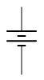

Fundamentos de Electricidad
La electricidad es una forma de energía que es fácil de generar. Podemos generarla de diferentes maneras, por ejemplo, a través de un generador eléctrico, podemos generarla a través de una celda fotovoltaica. Es fácil de convertirla en otros tipos de energía.
Los sensores nos permiten medir señales y los actuadores nos permiten convertir esas señales en alguna acción física. Esos actuadores y sensores muchas veces lo que están haciendo es convertir entre diferentes tipos de energía, por ejemplo, si tenemos un parlante. Un parlante lo que hace realmente es convertir una señal eléctrica en energía mecánica, que se manifiesta a través de ondas de presión en el aire.
La electricidad además es fácil de transportar en grandes cantidades. Lo vemos en torres de alta tensión que nos permiten recibir energía eléctrica en un lugar remoto, energía que es generada en otra región del país. También es fácil de conducir en pequeñas cantidades y a gran velocidad y precisión.
La electricidad puede ser utilizada en muchas aplicaciones. Esto es ideal para aplicaciones de potencia, donde queremos hacer actuar un motor, por ejemplo, un calefactor o un parlante de muy alta potencia. Pero también es ideal para manejar señales e información. Entonces aquí estamos distinguiendo entre dos tipos diferentes de usos: realizar señales y procesar datos. Existe electricidad estática y electricidad dinámica, principalmente nos vamos a centrar en la electricidad dinámica.
¿De qué está hecha la electricidad?
La electricidad es el flujo de carga eléctrica a través de un material. La carga eléctrica es transportada por electrones, los electrones que forman parte de todos los átomos neutros nos permiten transportar electricidad. Los electrones, por convención, tienen carga eléctrica negativa y se mueven en respuesta a un campo eléctrico.
La figura muestra un conductor eléctrico y cada uno de estos puntos representa un electrón. Asumiendo que hay un campo eléctrico que está moviendo los electrones en esa dirección. La electricidad como flujo de carga eléctrica es el movimiento promedio de todos estos electrones. Vemos que no todos se mueven en la misma dirección. La gran mayoría se está moviendo en cualquier dirección, realmente, en promedio, estos electrones se mueven en una dirección. Se mueven lentamente, en general, un electrón en un conductor se mueve a velocidades del orden de un centímetro por segundo. Realmente la electricidad, si lo consideramos como transporte de carga, no es tan rápida. Un electrón puede moverse a un par de centímetros por segundo dentro de este conductor.
Pero si entra un electrón nuevo por un lado, instantáneamente sale un electrón por el otro, vemos que la electricidad efectivamente sí se movió rápidamente. Esa transmisión de electricidad ocurre más o menos a la velocidad de la luz. Las ondas eléctricas viajan a la velocidad de la luz, aunque los portadores de carga viajen a velocidad finita. A medida que los electrones avanzan por su camino, van perdiendo energía. Cada vez que un electrón se mueve, debido a un campo eléctrico en un conductor, pierde algo de energía. Va convirtiéndola en otras forma de energía y una consecuencia indirecta de este efecto, es que podemos almacenar y procesar información usando electrones.
Típicamente la electricidad se produce por el movimiento de cargas negativas. Pero el movimiento de cargas negativas en una dirección en términos matemáticos, es equivalente al movimiento de cargas positivas en la dirección contraria. Entonces, aunque los electrones se muevan una dirección, vamos a hablar de que la electricidad transportada por una corriente eléctrica va en la dirección contraria. Es decir, la corriente va en la dirección contraria al movimiento de los electrones. Bajo este supuesto, podríamos pensar que la electricidad es transportada por cargas positivas. Eso no es verdad, en la gran mayoría de los conductores, la electricidad es transportada por cargas negativas.
Flujo de la Electricidad
La electricidad es provocada por movimiento de electrones, pero que produce corrientes que van en la dirección contraria al movimiento de estos. Tomemos una analogía sencilla para entender mejor la electricidad. Como el agua en el lecho de un río, que se mueve desde el punto más elevado al punto más bajo, mientras más alto, más energía potencial tiene el agua y a medida que va bajando, va perdiendo energía. Si está más alto, es capaz de desarrollar más trabajo útil. De la misma forma, las cargas eléctricas positivas en un conductor se mueven desde un punto de mayor voltaje o potencial a un punto de menor voltaje. Es una analogía directa entre la altura que tiene el agua y el potencial que tiene un electrón. A más alto potencial o voltaje, más energía tienen estos portadores de carga y son más capaces de desarrollar trabajo útil. Entonces, cuando le damos el voltaje a algo, en realidad estamos impartiendo más energía a los portadores de carga para que puedan realizar más trabajo útil.
Entonces como una analogía, tenemos un río y el agua fluye desde un punto más alto hasta un punto más bajo. Si por ejemplo tenemos una batería, esta tiene un terminal positivo donde hay un mayor potencial. Entonces las cargas eléctricas se mueven desde un punto de mayor potencial (terminal positivo), hacia un punto de menor potencial (terminal negativo).
En este caso estas cargas están pasando a través de una ampolleta. Al pasar por esta ampolleta estas cargas pierden energía y esa energía la convierten en calor y eventualmente en luz. Luego de que perdieron energía, esas cargas vuelven al terminal negativo de la batería, que se encarga de elevar el potencial para que luego salgan por el terminal positivo con más energía.
Unidades de Medida
Entonces, ¿qué es la electricidad? La electricidad es una forma de energía. Y además es el movimiento de cargas eléctricas a través de un circuito. La electricidad inevitablemente lidia con cantidades físicas o cantidades que podemos medir, por ejemplo podemos hablar de ondas de presión, que podemos eventualmente transformar en electricidad. O podemos hablar del color de un tipo de luz, que también podemos transformar en electricidad. Entonces siempre hay cantidades. Típicamente las variables físicas son traducidas a voltajes o corrientes en un circuito. Un tema interesante es que los voltajes y corrientes pueden abarcar órdenes de magnitud diferentes. Por ejemplo, hay circuitos que trabajan con un voltio de alimentación. Pero también hay sistemas de transmisión de energía que funcionan con 500.000 volts y cuando queremos medir señales muy pequeñas medimos milivoltios o microvoltios. Entonces, ¿cómo hacemos para diferenciar entre tantos órdenes de magnitud? lo que usamos normalmente para solucionar este tema son los prefijos. Existen giga, mega, kilo que son los más usados, para multiplicar un número por un factor. En estos casos son potencias de 10, 10 a la tres, 10 a la seis, 10 a la nueve. Entonces cada vez que hablemos de kilo, es 10 a la tres. De la misma forma que un kilogramo son 1.000 gramos, un kilovoltio, son 1.000 voltios, y un kiloamperio, son 1.000 amperios. Y tenemos sub múltiplos mili, micro, nano, pico, femto, atto, entre otros, y tienen una designación a través de una letra.
| Unidad | Tipo | Símbolo | Potencia |
|---|---|---|---|
Giga |
Múltiplos |
G |
|
Mega |
Múltiplos |
M |
|
Kilo |
Múltiplos |
k |
|
Mili |
Sub-Múltiplos |
m |
|
Micro |
Sub-Múltiplos |
µ |
|
Nano |
Sub-Múltiplos |
n |
|
Pico |
Sub-Múltiplos |
p |
|
Femto |
Sub-Múltiplos |
n |
|
Atto |
Sub-Múltiplos |
a |
|
Señales Eléctricas
La electricidad puede ser considerada, a grandes rasgos, casi como un fluido. Antiguamente se pensaba que había, de hecho, 2 tipos de electricidad, positiva y negativa. Luego Benjamin Franklin describió a la electricidad como un fluido de un solo tipo y el exceso o déficit de este fluido podía ser considerado como que es carga positiva o carga negativa. La verdad es que estuvo bastante cerca con su apreciación. Y una de las mejores analogías para los circuitos eléctricos son los circuitos hidráulicos. Es solo una analogía, no siempre funciona bien, pero sirve para empezar a entender mejor cómo funciona la electricidad.
En un rio, el agua pasa de una altura mayor a una altura menor y a medida que se mueve cada partícula de agua, cada molécula de agua va perdiendo energía. De la misma forma, cargas positivas que salen desde el terminal positivo de la batería van perdiendo energía hasta que entran finalmente por el terminal negativo.
Las cantidades físicas sobre las que se fundamenta todo lo que sabemos son voltaje y corriente. El voltaje se designa con la letra V y se mide en volts. (Es como si fuera la altura del agua en un circuito hidráulico), tiene que ver con la energía en los portadores de carga. En un circuito eléctrico el voltaje 0 es arbitrario. Y nosotros definimos el voltaje 0 donde más convenga y ese voltaje 0 le llamamos tierra. Entonces, esa tierra es la referencia arbitraria en torno a la cual medimos el voltaje.
Y luego está la corriente, que se relaciona con el flujo o caudal en un circuito hidráulico, tiene que ver con cuánta agua circula por una sección dada del río en un momento determinado. Tiene que ver con cuántos portadores de carga cruzan una sección del circuito en un tiempo determinado y se mide de manera absoluta, a diferencia del voltaje, que se mide en relación a una tierra, la corriente se mide de manera absoluta.
Voltaje
El voltaje también se le llama tensión. A mayor voltaje en un punto, mayor energía tienen los portadores de carga en ese punto. Los portadores de carga con mayor energía pueden realizar más trabajo útil. Por ejemplo, pueden mover un motor más rápidamente o pueden encender una luz con mayor intensidad. Si 2 objetos con voltajes diferentes llegaran a tocarse producirían un cortocircuito y corriente. Es decir, si tenemos 2 voltajes diferentes que se tocan, hay corriente entre ellos.
| Símbolo | Descripción |
|---|---|

|
Es el símbolo más genérico para una fuente de voltaje en un circuito. Comunmente suele ser una fuente de poder. Es una buena práctica dibujar los signos + y - dentro del círculo. |
Este símbolo se utiliza cuando hay fuentes alternas. Es el símbolo para una fuente de voltaje variable. El garabato dentro del círculo sugiere que este símbolo en particular representa un generador de onda sinusoidal. |
|

|
Este símbolo se utiliza para baterías. La línea horizontal más larga en el símbolo representa la terminal positiva de la batería y la línea horizontal más corta representa la terminal negativa. |
Corriente
La corriente es el flujo de portadores de carga en un circuito. Cuando hay corriente los portadores van cambiando su nivel de energía, cambian de voltaje, es decir, cuando van circulando por un circuito con corriente pierden energía. De la misma forma, que las moléculas de agua en el lecho de un río, cuando fluyen van perdiendo energía. Esa diferencia de energía realmente no se pierde sino que se convierte en otras formas de energía. La corriente fluye a través de conductores eléctricos, dispositivos electrónicos, motores, luces y objetos en general.

Es el símbolo más común para la corriente constante. La flecha indica la dirección del flujo positivo de la corriente.
Señales
Las señales eléctricas llevan información. En general las señales típicamente son de voltaje y no de corriente, varían en el tiempo.

El gráfico muestra la amplitud (el punto más alto que llega el voltaje) que medimos en volts versus tiempo (segundos). En el segundo 0, 1, 2, 3, 4, 5, 6, etcétera, tenemos una señal que va variando de manera continua, es decir que tiene un voltaje que varía de manera continua. Las señales tienen una parte variable y una parte que es constante. La parte variable le llamamos AC y la parte constante le llamamos DC. DC viene de "direct current" o corriente directa. Mientras que la parte AC viene por corriente alterna. La parte DC de una señal es el promedio de la señal en el tiempo. Si nosotros tomamos una señal en el tiempo y promediamos su valor, el valor promedio de la señal es la parte DC y la parte AC es todo lo que sobra. Por lo tanto, si sumamos parte DC más parte AC tendremos la señal completa.
Las señales varían y tienen frecuencia y período. Entonces las señales variables pueden ser descompuestas en una suma de señales fundamentales de diferentes frecuencias. Descomponerlas en sus frecuencias fundamentales resulta sumamente útil para el análisis. Diferentes señales a diferentes frecuencias nos permiten componer cualquier otra señal. Por lo tanto, cualquier señal que se nos ocurra puede ser descompuesta en diferentes frecuencias.

Para describir esta señal en
el tiempo usamos funciones. En este caso A(t) (A de t). A sub 0 es la amplitud (El valor
máximo al que llega esta señal). La constante 2π (2 * pi, es necesaria) y luego viene ƒ (frecuencia) y t (el tiempo),
sumado a Φ (phi, la cantidad de desfase respecto a un valor cero).
El tiempo y la frecuencia tiene que ver con cuántos
ciclos (períodos) ocurren en una unidad de tiempo.
Un ciclo se puede considerar desde un punto inicial a su amplitud máxima,
su amplitud mínima y volver al punto inicial. Lo que se demore la señal en cumplir un ciclo
lo consideramos como t. Este t se mide en segundos.
La frecuencia es . Por lo tanto este ƒ va a ser
1 partido por el período. Luego Φ es el desfase y
tiene que ver con cuánto más adelante o atrás está esta
señal respecto de un 0.
Existen 3 valores importantes en una señal sinusoidal, amplitud, frecuencia y fase. Y si nosotros sumamos muchas señales sinusoidales terminamos con cualquier señal arbitraria que se nos pueda ocurrir. Las señales eléctricas también pueden realizar acciones, no solamente nos permiten procesar información.